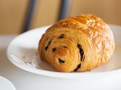
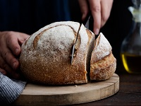
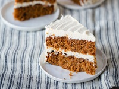
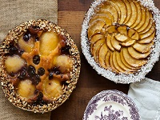
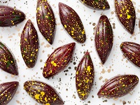
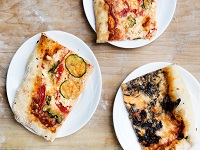

|  |  |  |
Péksüteményektökéletesen párosul egy csésze kávéval vagy teával, a nap nagyszerű kezdetéért. Édes és sós ízekkel egyaránt biztosan talál valami finomat. |
KenyerekA lágy és vajas, a kiadós és rusztikus kenyeret bármilyen étkezéshez passzolhat, a kedvenc szendvicsétől kezdve a levestől a sajtos tányérokig, vagy csak a kedvenc kenhetőségéig. |
DesszertekA csokoládé és a zamatos hab - ezek a kedvenc dolgaink. |
| Termékeink | Termékeink | Termékeink |
|  |  |  |
KülönlegességekAz ünnepi menüjéhez tartozó egyedi desszertektől kezdve a desszertekig és a szezon legjobb összetevőit tartalmazó szendvicsekig hagyja, hogy segítsünk megünnepelni az év bármely szakát családjával és barátaival. |
Macarons, Csokoládék és SüteményekPárizsi stílusú macaronsunk és gazdag, krémes csokoládéink - finom ajándék önmagának, barátainak és családjának. |
SzendvicsekAkár egy gyors szendvicset szeretne keresni, akár egy forró szelet pizzát, amellyel ülhet és élvezheti, vagy akár egy egész quiche-t, amelyet egy villásreggelihez szolgálnak fel, számos frissen készített sós választékot kínálunk, amelyek biztosan kielégítik majd. |
Termékeink | Termékeink | Termékeink |